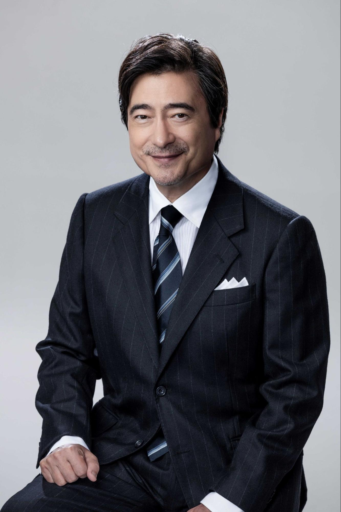

SPECIAL PROJECT
特別企画
ICUの卒業生に聞く、ここでしか読めないお話。
✦
ICU FESTIVAL OFFICIAL PROJECT
ICU祭実行委員会公式企画 インタビュー
さまざまな分野で活躍されているICU卒業生へのインタビュー記事を公開中！✨
学生時代の思い出や現在のお仕事、ICUでの経験が今につながったきっかけなど、ここでしか読めない貴重なお話をお届けします。
今回インタビューしたのは、
- 🎙️ ジョン・カビラ さん
- 🎙️ usutaku さん
お二人ならではの経験や価値観、ICUで過ごした日々を振り返るエピソードなど、ここでしか読めない内容が詰まっています。
✦ ジョン・カビラさんのご紹介
- 名前
- ジョン・カビラ
- ご職業
- ラジオパーソナリティ
1958年沖縄県生まれ。国際基督教大学（ICU）在学中に米UC Berkeley編入を経て、ICU卒業。CBSソニー在籍中にFM横浜でDJデビュー。1988年J-WAVE開局とともに同局のナビゲーターに。サッカー番組からドラマ、ドキュメンタリーまでテレビ番組への出演も多数。
2025年ギネス世界記録®「サッカービデオゲームコメンテーターの最多出演数」。ギャラクシー賞、日本放送文化大賞、日本民間放送連盟賞ほか。

SPECIAL TALK
【特別インタビュー】ジョン・カビラさんが語るICUでの原点
――「何事も経験、臆せず飛び込め！」
国際基督教大学（ICU）祭実行委員会によるアラムナイインタビュー企画。今回は、メディアの第一線でナビゲーターやナレーターとして活躍し続けるジョン・カビラさん（ID81）をお迎えしました。ICU進学の経緯から、伝説的なD館ダンスパーティーの思い出、UCバークレー留学での葛藤、そして長年培ってきたプロとしての仕事論まで、熱量あふれる言葉をたっぷりとお届けします。
01 ASIJからの進学と「学びの幅広さ」への期待
ICU祭実行委員会まずはじめに、数ある大学の中からICUへ進学された理由について教えていただけますか？
ジョン・カビラさん（以下、カビラさん）高校がほぼ野川公園を挟んで隣接しているアメリカンスクール・イン・ザ・ジャパン（ASIJ）なんですね。当時は、アメリカンスクールから日本の大学に進学する選択肢が非常に限られていて、事実上、上智大学の当時は比較文化学科、現在の国際教養学部かICUかという二択に近い状況でした。ただ、消去法でICUを選んだわけではありません。
キャンパスの豊かな環境はもちろん、実際に英語で講義が展開されていること、そして比較文化といった特定の狭い領域だけでなく、社会科学や人文科学、さらには自然科学も含めて、幅広い分野から履修科目を選べる環境に大きな魅力を感じていました。加えて、海外留学の可能性が多様に提示されている点も決め手でした。高校生活で培った英語力や知見をより生かし、高めることができるという強い期待を持って受験し、入学しました。
ICU祭実行委員会ご自身のバックグラウンドを生かしつつ、多様な学問に触れられる環境に魅力を感じられたのですね。
カビラさんそうですね。自分の知識や経験を深め、さらにそれを昇華させることができるキャンパスだと感じていました。
02 伝説の「D館ダンスパーティー」と学内サッカーリーグ（ISL）
ICU祭実行委員会学生時代を振り返って、特に印象に残っているエピソードや好きな場所はありますか？
カビラさん印象に残っている活動でいえば、「ISL（インターミューラル・サッカー・リーグ）」という学内サッカーリーグですね。入学した年だったと思いますが、先輩方の尽力で設立された校内リーグです。私は「TGD（スリーグレードドラゴンズ）」というチームで、先輩や同期と一緒にディフェンダーとしてプレーしていました。本格的な部活動よりも気楽に参加できましたし、フィールドで先輩方と汗を流した時間は本当に宝物です。
それと、お気に入りの場所といえば間違いなく「D館」ですね。クラスとクラスの合間の時間に、友人たちと集まってまったり過ごすのが日常でした。
ICU祭実行委員会D館ですか！私たち現役生もよく利用しますが、当時はどのように過ごされていたのですか？
カビラさん実はね、D館でダンスパーティーを開いていたんですよ（笑）。旧D館の部屋を借り切って、当時のディスコ、今でいうクラブのような空間にしてね。
当時、父がNHKに勤務していたので、そのツテをたどってNHKの技術さんからドライアイスを使ったスモークマシーンを借りてきたんです。フロアに本物のスモークを焚いて踊っていました。さすがに本格的な照明までは用意できませんでしたが、D館を見事にダンスフロアに変身させていましたね。
その時、一緒にイベントを仕切っていたのが、ASIJの後輩で、CBSソニーレコードでも私の後輩となり、その後、ソニーの社長を務めた平井一夫くんです。当時は「一夫」と呼んで一緒に盛り上がっていました。今となっては良い思い出です。
03 キャリアの原点とメディアでの表現論
ICU祭実行委員会ICU卒業後はCBSソニーに入社され、その後ラジオナビゲーターやテレビ出演など多岐にわたるキャリアを歩まれています。現在の仕事の原点について教えてください。
カビラさんCBSソニーレコード（現在のソニー・ミュージックエンタテインメント）には6年4ヶ月在籍し、海外渉外や輸出入などのビジネスを経験しました。やり切った感覚とともにキャリアチェンジを模索していたタイミングで、東京に新しいFM局（J-WAVE）が開局することになり、お声がけいただいたのがラジオの仕事を始めたきっかけです。
そこからテレビ番組のナレーションや出演、大好きなサッカーに関連する放送やゲームの仕事へと枝分かれしていきました。さまざまなフィールドで仕事をさせていただいていますが、自分にとってホームのピッチ（グラウンド）の面積が一番広くて落ち着く場所は、やはりラジオですね。
ICU祭実行委員会さまざまな現場で「伝える」際に、ICUでの学びが役立っていると感じる瞬間はありますか？
カビラさん物事を多角的に見る視点と、オープンでフェアな姿勢（アティチュード）ですね。ICUは男女比もほぼ半々でバランスが良く、海外からの留学生も欧米だけでなくアジアやアフリカなど多様な地域から集まっていました。異なるバックグラウンドを持つ人々と交流する中で、「自分が常識や当たり前だと思っていることを一度問い直す」という習慣が自然と身についたと感じます。
また、生放送は生き物です。自分が分かっているつもりでも、それをどう言葉にして聞き手に届けるか。相手の立場を思い浮かべながら、説明過多にならず、かつ分かりやすく噛み砕くバランスを常に模索しています。国際法のゼミ（故・横田洋三先生のゼミ）で鍛えられたプレゼンテーションの経験も、間違いなく現在に繋がっています。
04 UCバークレー留学での挫折と「己の身の丈を知る」経験
ICU祭実行委員会長年第一線で活躍されていますが、学生時代に壁にぶつかったり、挫折を感じたりした経験はありましたか？
カビラさん一番強烈だったのは、ICU3年時に留学したカリフォルニア大学バークレー校（UCバークレー）での経験ですね。UCバークレーは全米でもトップクラスの優秀な学生が集う環境です。そこで、「ICUで2年も多く学んできたはずの自分が、なぜこんなにも打ちのめされるのか」「なぜ自分の英語や知識が通用しないのか」と己の身の丈を知らされました。強烈な現実を突きつけられた瞬間でしたね。
ICU祭実行委員会その苦しい状況を、どのように乗り越えられたのでしょうか？
カビラさん僕はもともと、物事を深く深刻に捉えすぎない体質なんです。「雲の上はいつも晴れている」という感覚で、ダメだったとしても必ず次が来ると思えるタイプなんですね。
バークレーでも、「もうやるしかない。挑んでベストを尽くそう。それでもダメなら甘んじて結果を受け入れるしかない」と腹をくくりました。後悔するよりも「次はもっとうまくやれるはず」と自分に問い続ける。伝える仕事も製品開発と違って「完成形」がない世界ですから、常に自分の中で理想を模索し続ける姿勢こそが大切なんだと思います。
05 「立場に安住しない」――フラットな対話が生み出す場の空気
ICU祭実行委員会これから社会に踏み出す学生へ向けて、働く上で大切にしてほしいマインドについてお聞かせください。
カビラさんよく「社会人になる」という言い方をしますが、私はこの言葉に少し疑問を持っています。人は生まれた瞬間から社会の一員であって、働くことで急に「社会人」というカテゴリーに組み込まれるわけではありません。立場や身分にとらわれず、その場で自分が何を追求したいか、何が求められているかを考えることが大切です。
そして、長く仕事を続ければ続けるほど「立場や経験に安住してしまう」という危険性が生まれます。だからこそ、立場で発言するのではなく、誰しもがフラットに意見を言える環境を作ることが重要です。
経験に裏打ちされた意見も当然価値がありますが、今日新しく入ってきた人の「なぜこれはこうなっているんだろう？」という素朴な問いの中にこそ、大きな発見があります。どんな立場の人も「今日このチームにいてよかった」と思える、明るくオープンでフェアな現場作りを常に意識しています。
06 在学生へのメッセージ：「何事も経験。臆せず飛び込め！」
ICU祭実行委員会最後に、ICU生や若い世代へ向けたメッセージをお願いします。
カビラさん皆さんの前には、自分が気づいていないところも含めて、たくさんのチャンスが転がっています。安全や他者への配慮が担保されているならば、臆することなくどんどん新しい領域に飛び込んでチャレンジしてください。
「挑戦」と気負う必要はありません。平たく言えば「何事も経験」です。うまくいかなかったことやネガティブな経験も含めて、すべてが将来の糧になります。何もしないで機会を逃してしまうことほど、もったいないことはありません。
人生は本当に長いです。最初に選んだ道がすべてではありませんし、途中で何度だってピボット（方向転換）していい。自分自身に対して優しく、変化を楽しみながら歩んでいってください。
何はともあれ、いろんなことを経験して、それを糧に成長しながら楽しんでください。Have fun, you have to have fun!
【執筆】 ICU祭実行委員会 松室驍
✦ usutakuさんのご紹介
- 名前
- usutaku
- ご職業
- Michikusa株式会社 CEO / デジタルハリウッド大学 特任准教授
AI研修を提供するMichikusa株式会社 CEO。デジタルハリウッド大学 特任准教授。
Amazon JapanにてAccount Manager、AI開発ベンチャーにて取締役を経験後、Michikusa株式会社を創設。ICU卒。SNS総フォロワー50万人越え。著書に『Notion AI ハック』（翔泳社）。

SPECIAL TALK
【特別インタビュー】Michikusa株式会社 CEO usutakuさんが語る、ICUでの学びと現在の仕事
ICU祭実行委員会によるアラムナイインタビュー企画。今回は、法人・個人向けのAIコンサルティングや教育事業を手掛け、起業家・大学講師・配信者として幅広く活動されているusutakuさん（ID23）をお迎えしました。テクノロジーに興味を持ったきっかけから、ICUでの学び、ラグビー部と長期インターンに取り組んだ学生時代、そして現在のAI事業に至るまで。ICUでの経験を振り返りながら、学んだことを行動に移し、成果につなげることの大切さについてお話しいただきました。
01 ICUへの進学理由と学生時代の取り組み
ICU祭実行委員会まずはじめに、現在のお仕事につながるバックグラウンドと、ICUへ進学された経緯から教えていただけますか？
usutakuさん両親がエンジニアだったので、幼い頃から自宅にパソコンがある環境で育ちました。周りの友達がテレビやエンタメに夢中になっている時期も、自分はずっとパソコンを触っていたんです。その原体験が、現在のITやAI事業の根底にあると思います。
ICUとの縁でいうと、両親もICU出身で、姉もICU高校に通っていました。僕は千葉の公立中学校に通っていたのですが、どうも学校の雰囲気に馴染めなくて。そんな時、姉から「ICUには何事にも全力で取り組む人がいて、そういう人が格好いいんだよ」と聞かされ、強い魅力を感じてICU高校へ入りました。大学進学時も、当時はまだ専攻が決まっていなかったので、「ICUなら最初の2年間でじっくり考えられる」という理由で、そのまま進学を決めました。
ICU祭実行委員会ご家族から聞いたICUの印象は、実際のキャンパスライフにも当てはまりましたか？
usutakuさんカルチャーの違いやギャップも含めて、本当に楽しい4年間でした。ただ、ICUの学生文化の中で、少し気になっていた部分もあります。それは、批判的に考えることが、時に物事を少し距離を置いて見ることにつながってしまう点です。
批判的に考えること自体は大切ですが、せっかく興味を持ったことに対して、最初から一歩引いてしまうのはもったいないと感じていました。僕は昔からテクノロジーが好きですし、どんな場面でも全力でその場を盛り上げる側にいたい。その「全力で取り組む」というスタンスは、昔も今も変わっていません。
ICU祭実行委員会「自分を成長させたい」という当時の原動力は、どのように変化していったのでしょうか。
usutakuさん学生時代は、正直「世のため人のため」ということを最初から考えていたわけではありませんでした。ICUでボランティアなどに取り組む同級生を見て、格好いいなと思う一方で、自分とは少し違うなと感じることもありました。
僕の場合は、まず自分が頑張って成長し、お金を稼ぐことが最優先だったんです。その後、起業して人・モノ・お金の面で自分自身に余裕ができて初めて、「もっと社会に貢献したい」という思いが自然と湧いてきました。人によって出発点は違うと思いますが、自分の場合は、まず力をつけることが必要だったんだと感じています。
02 ジェンダー学と人類学から学んだ、異なる文化や価値観への向き合い方
ICU祭実行委員会大学での学問や講義で、特に印象に残っているものはありますか？
usutakuさん専攻したジェンダースタディーズ、特にフェミニズムについての講義ですね。もし他大学に行っていたら、確実に経済学かコンピュータサイエンスを選んでいたと思うので、ICUでなければ出会わなかった学問だと思います。
もともとは、どちらかというと批判的な視点を持っていたからこそ、「学んでおかなければ」という探究心から入りました。ですが、真面目に向き合う中で、自分の考え方や物事を見る視点が大きく変わりました。
また、人類学の講義で学んだ「エスノセントリズム（自文化中心主義）」についても、深く印象に残っています。自分の文化や考え方を基準にして、他の文化を判断してしまうことへの批判です。自分の文化や価値観を当然のものとせず、異なる背景を持つ相手を理解しようとする姿勢は、大切な学びでした。
ICU祭実行委員会その学びは、卒業後のキャリアにも活かされているのでしょうか。
usutakuさん非常に活きていると感じます。新卒でAmazonに入社した際も、帰国子女や外国籍の社員が多い環境でした。
異なる宗教や国籍、言語を持つ人と接する時に大切なのは、単に英語が話せることだけではありません。趣味や仕事に対する価値観など、お互いの共通点を見つけながら、それぞれの文化や背景を尊重して協働することが重要です。そうした姿勢は、ICUの講義やディスカッションの場で培われたものだと思います。
03 部活とインターンに打ち込んだ学生生活
ICU祭実行委員会学生時代はラグビー部に所属しながら、長期インターンや学業にも取り組まれていたそうですね。どのような生活を送っていたのでしょうか？
usutakuさん本当に忙しい毎日でしたね。朝5〜6時に起きて課題を終わらせ、1・2限に授業を集中させ、午後は部活で体を追い込み、夕方3時や4時から夜8時までインターン。武蔵境駅から新宿や渋谷へ満員電車で通い、夜遅くに帰ってきて、また自転車で帰宅するという生活を繰り返していました。
初心者で入ったラグビー部は、規律も厳しく大変でしたが、「逃げずにやり切れば、必ず力になる」と信じて乗り越えました。
ICU祭実行委員会それだけ忙しい中で、学業に対する意識はどのように変化しましたか？
usutakuさん面白いことに、インターンを始めてからの方がGPAが上がったんです。インターン先では、ひたすらアウトプットと成果を求められます。そうすると、「自分にはインプットが足りない」と実感し、自発的に勉強したくなるんですよ。
小中高までの「やらされる勉強」とは違い、大学には、世界トップクラスの専門家に質問でき、好きなだけ学べる環境がある。そのことの贅沢さに気づいたんです。時間の使い方も少しずつ洗練され、学ぶことが本当に楽しくなりました。
また、この時期に培った体力や、忙しい環境の中でも取り組み続ける力は、現在、会社経営・大学講師・配信者を並行して活動するうえでも、土台になっていると感じます。
04 キャンパスでの思い出
ICU祭実行委員会キャンパス内でお気に入りの場所や、今でも覚えているICU祭の思い出はありますか？
usutakuさん一番思い出が詰まっているのは、やっぱり人工芝のフィールドですね。夏の猛暑の中、ゆらゆら揺れる陽炎を見ながら、「俺、今めちゃくちゃ頑張ってるな」と感じた瞬間は、まさに青春でした。
仲間とアコースティックギターを弾いたり、ばか山で遊んだりした記憶も、大切な宝物です。
05 ChatGPTとの出会いから始まったAI事業
ICU祭実行委員会卒業後、起業を決意し、現在のAI事業に行き着いたきっかけは何だったのでしょうか？
usutakuさん一番の転機は、間違いなくChatGPTとの出会いです。
もともとエンジニアを目指していましたが、プログラミングの壁にぶつかって挫折した経験がありました。起業家への憧れはあったものの、これだ、と思えるテーマが見つからず、葛藤していたんです。
そんな時にChatGPTが登場し、以前は書けなかったコードが一瞬で書けるようになった。その時の感動は、今でも忘れません。「自分はこの技術に出会うために、今まで頑張ってきたんだ」と、すべてのパズルのピースがはまったような感覚でした。
現在は、企業や個人向けにAI活用をレクチャーする事業を通じて、日本の生産性向上を目指しています。新しい活用法を発見して世の中に発信し、それが広まっていく瞬間に大きなやりがいを感じますね。
06 ICU生へのメッセージ
ICU祭実行委員会最後に、現在のICU生に向けてメッセージをお願いします！
usutakuさんICU生は、社会課題に関心を持ち、さまざまな問題について深く考える機会が多いと思います。パレスチナ問題や環境問題など、世界で起きていることについて議論する場も多いですよね。
一方で、議論や理想を語ることに加えて、実際に行動し、成果につなげていくことも大切だと感じています。
例えば、サステナビリティについて発信するためにInstagramアカウントを作り、Canvaで画像をデザインして投稿する。そこから、さらに多くの人に届けたり、具体的な活動につなげたりするには、次の一歩が必要になります。
世界を動かすためには、理想を掲げるだけでなく、人やお金を動かし、実際にビジネスやプロジェクトとして成立させていく力も重要です。営業をかけたり、協力してくれる人を探したり、試行錯誤を重ねたりする。そうした地道な取り組みの積み重ねが、成果につながっていくのだと思います。
高い志や問題意識を持っているICU生だからこそ、自分の考えを現実の行動に移し、目に見える成果につなげるところまで、ぜひ挑戦してみてください。心から応援しています。
【執筆】 ICU祭実行委員会 上野真優